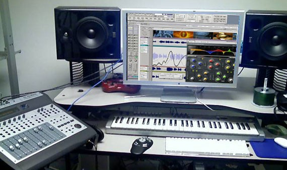
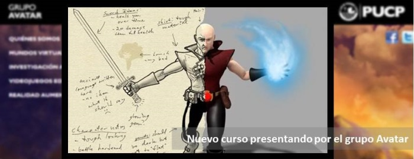

Desarrollo de Videojuegos
¿Qué es?
El desarrollo de videojuegos es el proceso de creación de un videojuego, desde el concepto inicial hasta el videojuego en su versión final. Es una actividad multidisciplinaria, que involucra profesionales de la programación, el diseño gráfico, la animación, el sonido, la música, la actuación, etcétera.

- Concepción de la idea del videojuego
- Diseño
- Planificación
- Producción
- Pruebas
- Mantenimientos
- Funcionalidad
Etapas para desarrollar los videojuegos
|
Un poco de historia |
Conceptos básicos |
Concepción del videojuego |

Diseño |
Planificación |
|
Producción |
 Pruebas |
 Mantenimiento |
Funcionalidad |

Curiosidades |